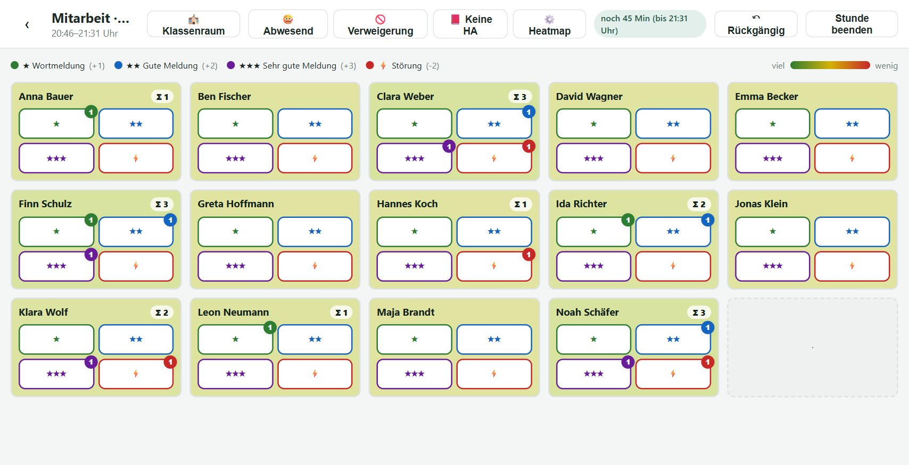
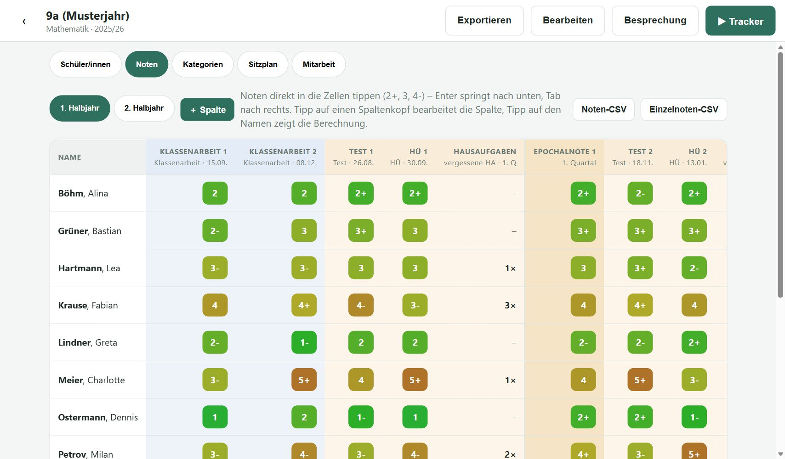
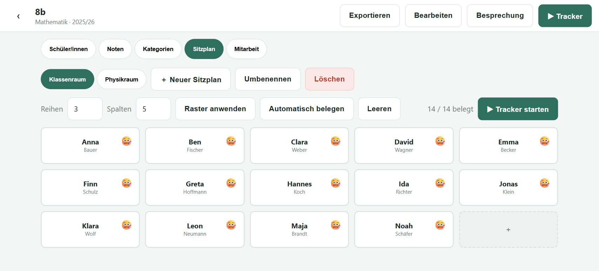
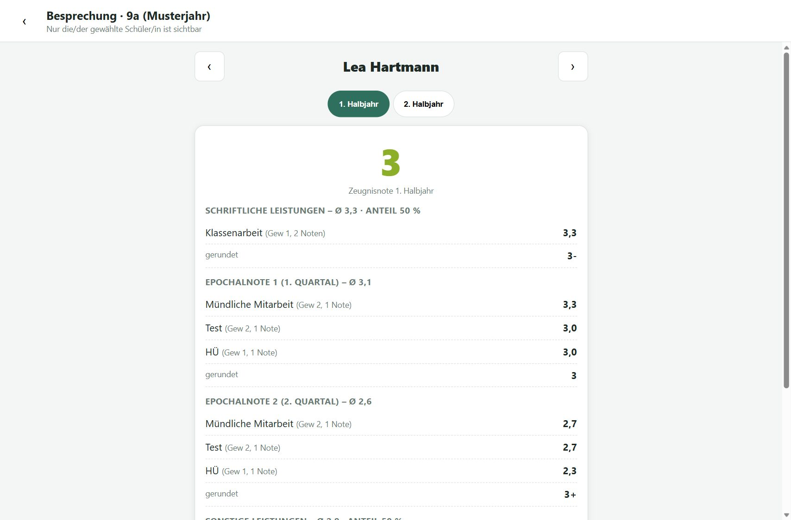

Funktionen im Überblick

Mitarbeits-Tracker
Jede Schülerin, jeder Schüler als Kachel im Sitzplan. Ein Tipp erfasst eine Wortmeldung (★ / ★★ / ★★★) oder Störung (⚡). Die Heatmap zeigt auf einen Blick, wer sich lange nicht gemeldet hat. Dazu Modi für Abwesend, Leistungsverweigerung und fehlende Hausaufgaben, Restzeit der Stunde laut Stundenplan und Rückgängig – auch für einzelne ältere Einträge.

Notenübersicht je Halbjahr
Eine Spalte je Leistung, Eingabe wie in einer Tabelle mit Nummernpad. Epochalnoten je Quartal, schriftliche und sonstige Leistungen, Zeugnisnote und Jahresnote werden automatisch berechnet – angezeigt als Tendenz (2+, 3, 4-). Ab Klassenstufe 11 mit MSS-Punkten (0–15).

Sitzpläne für jeden Raum
Raster frei wählbar, Plätze antippen und belegen. Mehrere Sitzpläne je Klasse – etwa Klassenraum und Fachraum; beim Start der Stunde wählst du den Raum.

Besprechungsmodus
Zeigt nur eine Schülerin bzw. einen Schüler – ideal für das Notengespräch, ohne dass andere Noten sichtbar sind. Mit der Herleitung der Zeugnisnote Schritt für Schritt.
Mitarbeitsnote per Knopfdruck
Aus den erfassten Stunden entsteht je Quartal ein Notenvorschlag. Mit Quartal abschließen prüfst und übernimmst du ihn in die Notenübersicht.
Export & Sicherung
CSV-Export der Noten, Schülerlisten per CSV oder eingefügter Namensliste importieren, einzelne Klassen weitergeben und das komplette Backup als Datei sichern.
Erste Schritte
- Als App installieren. Auf dem iPad in Safari öffnen → Teilen-Symbol → Zum Home-Bildschirm. Danach startet Noten-Fritze wie eine App und funktioniert auch ohne Internet. Das schützt außerdem deine Daten (siehe Hinweise unten).
- Erst einmal ausprobieren. Beim ersten Start gibt es eine Beispielklasse 8b. Unter ⚙️ Einstellungen → Beispielklassen anlegen kommen zwei Klassen mit einem komplett durchgespielten Schuljahr dazu. Alle Namen sind erfunden.
- Klasse anlegen. Startseite → ＋ Klasse. Die Klassenstufe entscheidet, ob mit Schulnoten oder (ab Stufe 11) mit MSS-Punkten gerechnet wird.
- Schülerinnen und Schüler eintragen. Reiter Schüler/innen → ＋ Schüler/in oder eine Namensliste bzw. CSV-Datei importieren.
- Kategorien prüfen. Im Reiter Kategorien legst du fest, was wie stark zählt (z. B. Klassenarbeiten, Tests, mündliche Mitarbeit).
- Sitzplan einrichten. Reiter Sitzplan → Reihen und Spalten wählen, Plätze antippen oder Automatisch belegen. Für weitere Räume: ＋ Neuer Sitzplan.
- Im Unterricht. ▶︎ Tracker starten → Einzel- oder Doppelstunde → Meldungen und Störungen auf den Kacheln antippen. Vertippt? ↶ Rückgängig nimmt den letzten Eintrag zurück; lange drücken (am PC: Rechtsklick) zeigt alle Einträge der Stunde zum gezielten Entfernen.
- Noten eintragen. Reiter Noten → ＋ Spalte für jede Leistung, dann die Zellen antippen und über das Nummernpad eintragen.
- Zum Quartalsende. Reiter Mitarbeit → Quartal abschließen → Vorschläge prüfen, bei Bedarf anpassen, übernehmen.
- Noten besprechen. In der Klasse oben Besprechung – eine Person nach der anderen, mit Herleitung.
- Regelmäßig sichern! ⚙️ Einstellungen → Backup exportieren (JSON). Die Datei an einem sicheren Ort aufbewahren – sie enthält alle Noten.
Wichtige Hinweise
Deine Daten liegen nur auf diesem Gerät
Noten-Fritze speichert alles im Browser des Geräts, auf dem du es benutzt. Es gibt keinen Server und keinen Abgleich zwischen Geräten. Wer die Website-Daten des Browsers löscht, das Gerät zurücksetzt oder verliert, verliert auch die Noten – außer es gibt ein Backup.
Schülerdaten auf dem eigenen Gerät
Noten sind personenbezogene Daten von Schülerinnen und Schülern. Wer sie auf einem privaten Gerät verarbeitet, braucht dafür in der Regel eine Genehmigung der Schulleitung; die Einzelheiten regelt jedes Bundesland selbst. Bitte kläre das mit deiner Schulleitung bzw. dem oder der Datenschutzbeauftragten. Sichere das Gerät mit einem Code und gib Backup-Dateien nicht unverschlüsselt weiter.
Berechnungen ohne Gewähr
Die App rechnet nach festen Regeln (Gewichtung der Kategorien, Drittelnoten, Zeugnisskala). Maßgeblich sind die Vorgaben deiner Schule und deine pädagogische Entscheidung – prüfe Noten deshalb vor der Vergabe.
Datenschutzerklärung
Verantwortlich
Patrick Knapp (privates, unentgeltliches Projekt)
E-Mail: noten-fritze@patrick-knapp.de
Was die App speichert
Alles, was du in Noten-Fritze eingibst (Klassen, Namen, Noten, Mitarbeit, Einstellungen), wird ausschließlich lokal im Speicher deines Browsers (IndexedDB) auf deinem Gerät abgelegt. Diese Daten werden nicht an mich oder Dritte übertragen. Die App verwendet keine Cookies, kein Tracking, keine Analyse- oder Werbedienste und lädt keine Inhalte von fremden Servern. Damit die App offline funktioniert, speichert der Browser ihre Programmdateien zwischen; darin sind keine personenbezogenen Daten enthalten. Löschen kannst du deine Daten jederzeit unter ⚙️ Einstellungen → Alle Daten löschen oder über die Website-Daten deines Browsers.
Hosting bei GitHub – betrifft nur den Abruf der Seite
Die Programmdateien von Noten-Fritze werden über GitHub Pages ausgeliefert (GitHub Inc., 88 Colin P. Kelly Jr. Street, San Francisco, CA 94107, USA). Was du in der App eingibst – Namen, Noten, Mitarbeit –, wird nicht an GitHub übertragen; es verlässt dein Gerät nicht.
GitHub erhält beim Aufruf der Seite nur die technischen Verbindungsdaten des Geräts, das die Seite lädt – also deines Geräts: IP-Adresse, Zeitpunkt, abgerufene Datei und Browserinformationen. Sie werden verarbeitet, um die Seite auszuliefern und abzusichern. Ist die App auf dem Home-Bildschirm installiert, läuft sie aus dem Zwischenspeicher des Geräts; GitHub wird dann nur noch gelegentlich nach Updates gefragt. Rechtsgrundlage ist Art. 6 Abs. 1 lit. f DSGVO; das berechtigte Interesse liegt in einer sicheren und stabilen Bereitstellung. Dabei können Daten in die USA übermittelt werden; GitHub stützt solche Übermittlungen auf das EU-U.S. Data Privacy Framework bzw. Standardvertragsklauseln. Ich selbst habe keinen Zugriff auf diese Protokolle. Näheres: Datenschutzerklärung von GitHub.
Deine Rechte
Du hast das Recht auf Auskunft, Berichtigung, Löschung, Einschränkung der Verarbeitung, Widerspruch und Datenübertragbarkeit sowie das Recht auf Beschwerde bei einer Datenschutz-Aufsichtsbehörde – etwa an deinem Wohnort. Zuständig für mich ist der Landesbeauftragte für den Datenschutz und die Informationsfreiheit Rheinland-Pfalz.
Stand: September 2026
Kontakt & Lizenz
Noten-Fritze ist ein privates Hobbyprojekt von Patrick Knapp – ohne Werbung, ohne Einnahmen, ohne Datenerhebung.
E-Mail: noten-fritze@patrick-knapp.de
Fehler melden, Wünsche äußern: gern per E-Mail oder über GitHub (kostenloses GitHub-Konto nötig; die Einträge dort sind öffentlich). Bitte in keinem Fall echte Schülerdaten mitschicken – Beispielklassen reichen zum Zeigen.
Quellcode: github.com/PaK-X-NRW/Noten_Fritze
Lizenz: Noten-Fritze steht unter der MIT-Lizenz. Du darfst die Software frei nutzen, verändern und weitergeben. Sie wird ohne jede Gewähr bereitgestellt.